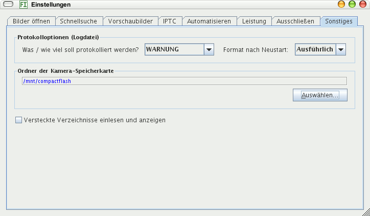

Der Programmablauf wird protokolliert und das Protokoll in eine Logdatei geschrieben. Diese kann angezeigt werden durch Klick auf eine Schaltfläche am unteren Fensterrand. Sie ist grün, wenn alles ok ist und rot, falls Fehler auftraten. Bedeutung der Auswahl:
Wählen Sie WARNUNG, solange keine Probleme bestehen und zur Fehlerbehebung AM FEINSTEN.
Hier können Sie einen Ordner auswählen, von dem die Bilder einer Speicherkarte in ein Verzeichnis kopiert werden.
Wähen Sie den Ordner, in dem der Inhalt Ihrer Kamera-Speicherkarte angezeigt wird, wenn Sie Ihre Kamera mit dem Rechner verbinden oder die Karte in einen Kartenleser einführen. Er reicht, das oberste Verzeichnis auszuwählen (die Wurzel), die Unterverzeichnisse werden automatisch durchsucht.
Wollen Sie Bilder archivieren, die in versteckten Verzeichnissen gespeichert sind, kreuzen Sie dieses Kästchen an.
